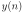
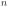
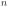

Next: The error signal Up: Deep learning Previous: Motivation
Fig. 1A shows a neuron in a single layer (Rosenblatt, 1958).
Its activation is  and is the  th neurn in this layer.
 is the current time-stamp. The input activity to the neuron
th neurn in this layer.
 is the current time-stamp. The input activity to the neuron
 is weighted by
is weighted by
 and summed up to:
and summed up to:
 from the introduction is here a simple linear
combination of input activities where
had to be learned
to approximate .
from the introduction is here a simple linear
combination of input activities where
had to be learned
to approximate .